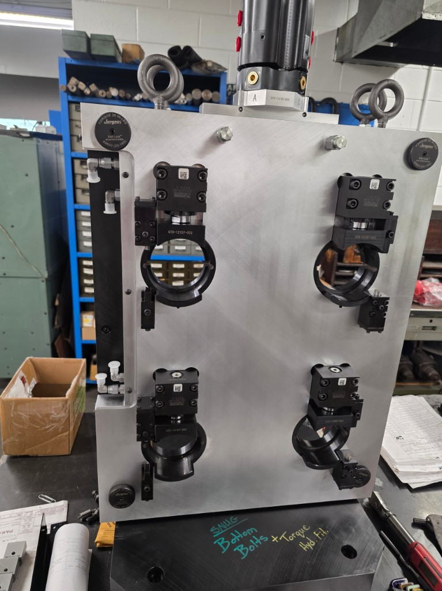

Machine Column Risers
View Details →
A Mill column riser is a precision ground block installed between the machine base and the column along with custom sheet metal to accommodate the change in height. Column riser will increase the clearance height of the machine between the spindle and table. This can be beneficial when machining taller parts, adding 4th/5th rotary tables, that may limit access to part features or restrict tooling options. Additional advantage — avoid the need for larger machines that only require Z axis clearance.

Safety & Environmental Modifications
View Details →
For applications that require additional safety controls, fully machine integrated fire protection, door and window interlocks, light curtains (Presence-Sensing) are required to ensure adequate protection for the operator and machine. To improve air quality from mist, dust, fumes, the appropriate collection system can collect air contaminants during the machining process.

Sheet Metal Modifications
View Details →
Sheet metal modifications become necessary for various reasons to expand working envelops, contain fluids, clearance to mention a few. Here are few sheet metal examples that may benefit your machining process.
- X-Axis Bump Out: For longer parts that fit within the machining window of a smaller machine but due to total part length or workholding interference with side panels. The side panels can have extensions called bump outs.
- Tool Changer: When larger diameter tools or right-angle heads cannot fit through the tool changer modifications can be made to accommodate many situations.
- Tool Changer Door: To ensure coolant and chips cannot escape into the tool changer a custom shutter door solution can be integrated into the machine tool change sequence.
- Sealing Solutions: When utilizing high pressure coolant there may be a need for additional sealing to contain liquids. For problem leak areas that are a nuisance additional skirts and drip guarding can be an inexpensive fix.
Auto Doors
View Details →
Horizontal Door: We offer a custom Servax door drive solution that provide enhanced safety and reliability. Fully integrated with your machine tool. This solution is ideal for single or double door machines. The intelligent self-monitoring feature reliable, integrated safety functions. Position, speed and torque are constantly monitored. Automatic reacts to obstacles immediately changing directions. Light curtains and two-hand buttons are not required.
Vertical Door: Vertical doors are a great option for machine tending robot cells. They allow for operator full access into the primary door without having to enter the robot cell. Door is fully integrated with machine and output provided to robot cell.

Hydraulic – Pneumatics
View Details →
Hydraulic and pneumatic circuit integration for workholding, clamping, actuators, and other production-enhancing machine functions.

Custom Workholding
View Details →
Purpose-built fixtures designed for your specific part — improving repeatability, reducing setup time, and enabling automation-ready production.

Process Engineering
View Details →
On-site process development and engineering analysis to optimize your machining workflow, reduce cycle time, and improve part quality.

Specialty Machine
View Details →
One-off machine builds and custom engineering for unique production requirements where off-the-shelf equipment will not do.